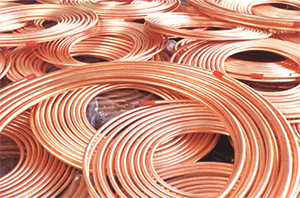

Fakta om koppar
Koppar kan likt ädelmetallerna ibland förekomma metalliskt i naturen och är den första metallen som mänskligheten lärde sig att bearbeta. Från omkring 4000 f.Kr. finns fynd som visar att indianer i Nordamerika använde koppar till pilspetsar och i Sydamerika utvecklades kopparmetallurgi under 1000-500 f.Kr. exempelvis i Mochekulturen.
Koppar finns i jordskorpan, bundet i malmerna. Det bryts därför vanligen i dagbrott som till exempel Chuquicamata i Chile, Bingham Canyon Mine i Utah, USA och El Chino Mine i New Mexico, USA. Enligt United States Geological Survey var 2011 Chile den största producenten av koppar med 5,4 miljoner ton.
